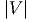
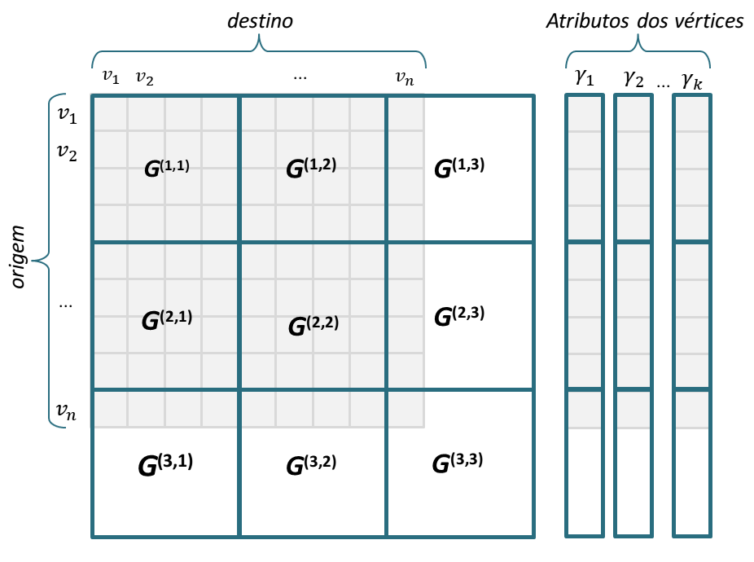

Estudante de doutorado da Universidade de São Paulo (USP) sob supervisão do Professor Doutor Jose Fernando Rodrigues Júnior. Mestre em ciências da computação da Universidade de São Paulo (USP) - Brazil com período sandwiche no Instituto Tecnologia da Georgia. Engenheiro de Sistemas da Universidade Industrial de Santander - Colombia.
E-mail: gualdron@usp.br
Telefones: (+55) 16 3373-9677 / 3373-9693
Arcabouço de processamento de grafos de larga escala baseado em memória secundaria que emprega um modelo de processamento bimodal. M-Flash otimiza o acesso ao disco por meio do particionamento do grafo em regiões (blocos) densas e esparsas, minimizando o custo de I/O.
CODE
https://github.com/M-Flash
Técnica de alta escalabilidade para visualização de grafos usando estruturas simples e recurrentes como estrelas, caminhos, cliques e estruturas bipartidas. StructMatrix usa uma versão estendida da matriz de adjacência que permite apresentar a cardinalidade, distribuição e relacionamento das estruturas simples.
Processamento e visualização de grafos de larga escala.
Problema e motivação Não é simples de se avaliar o real tamanho da informação digital, mas alguns trabalhos sugerem
sua magnitude assim como seu crescimento. Uma postagem oficial da empresa Twitter [1],
especializada no compartilhamento de dados entre usuários comuns, revelou que foram necessários
três anos, dois meses e um dia entre a primeira mensagem de texto, postada em março de 2006, e
a mensagem de número 1 bilhão; ao passo que, no ano de 2011, foi necessária uma única semana
para se produzir a mesma quantidade de dados. Um trabalho recente intitulado “Big
Data: Promises and Problems” [2] estima que atualmente um petabyte dos dados são
públicos e crescem aproximadamente 0,5 petabytes por ano, dos quais só 22% tem sido
considerado útil. Todos estes dados carregam informações intrínsecas de potencial utilidade;
com efeito, em um estudo recente, publicado em 2014 pelas gigantes multinacionais
General Eletric e Accenture [3], os autores discutem o impacto do uso de técnicas de
análise de dados no cenário competitivo industrial, enfatizando a urgência para que as
empresas se adaptem e comecem a adquirir vantagens de negócio por meio do tratamento
adequado dos dados. Além disso, o estudo discute a importância do papel da análise de
dados na melhoria de serviços de saúde, envolvendo os aspectos clínicos, financeiros e
operacionais.
Muitos desses dados descrevem relacionamentos entre seus elementos, como no caso dos
sistemas de recomendação, redes de relacionamento, interação proteica, segurança cibernética,
entre muitos outros; tais dados são adequadamente representados como grafos. No entanto,
diferente do paradigma mais usual de processamento de representação de grafos – o qual se
baseia em listas ou matrizes que cabem em memória, esses grafos são grandes demais,
chegando a ocupar discos inteiros, ou mesmo agrupamentos definidos por múltiplos
discos. Por exemplo, o grafo Yahoo Web [4] possui mais de 1 bilhão de vértices e quase 7
bilhões de arestas; o grafo Twitter [5] é medido em unidades de terabyte; e o grafo
clickstreams [6] alcança a magnitude de petabyte. Muito embora contenham informações de
interesse, o processamento apropriado destes grafos é um desafio que requer alto poder
de processamento ou, alternativamente, algoritmos alicerçados em uma engenharia
que permita o processamento mesmo com recursos limitados de processamento. Este
problema ocorre, pois o processamento clássico de grafos se baseia em algoritmos de
varredura, em largura ou em profundidade, os quais, por não serem paralelizáveis, tornam-se
inviáveis em tempo de processamento. Algoritmos centrados em vértices ou em arestas,
mesmo não sendo baseados em varredura, demandam processamento proporcional à
cardinalidade de vértices e arestas do grafo. Em ambos os casos, nem a memória do
sistema nem o fluxo de dados do disco são adequadamente usados para se ampliar o
desempenho. Alternativamente, outros trabalhos têm sido propostos de maneira a se obter alto
processamento em um único de nó computacional, como um notebook ou um desktop
convencional. Para tanto, estes trabalhos utilizam uma engenharia mais elaborada cuja
ideia é maximizar o fluxo de dados vindos da memória secundária ao mesmo tempo
em que se usa toda a memória principal para processamento orientado a vértice ou a
aresta; de maneira geral, esta abordagem tem sido denominada processamento em blocos.
Desta maneira, arcabouços como GraphChi, TurboGraph[15], X-Stream [16], e MMAP
[17] processam grafos com a mesma escala que arcabouços compostos por dezenas de
computadores, e em alguns casos são até mais eficientes na execução de algoritmos como
PageRank, Componentes conexos, propagação de crença e contagem de triângulos
[14].
Além da perspectiva numérica para análise de grafos, tem sido estudada amplamente a
visualização como ferramenta de apoio na compreensão dos grafos [18, 19, 20, 21]. Nessa área de
pesquisa tem predominado dois paradigmas para análise visual, o paradigma da vista global ou
técnicas top-down e o paradigma da vista local ou técnicas bottom-up. As abordagens globais
baseadas no mantra proposto por Shneiderman “visão global, zoom e filtragem, detalhes por
demanda” [22] foram de muito interesse e mostraram boa aplicabilidade em muitos domínios
[23, 24, 25, 26]; no entanto, a criação da vista geral do grafo pode precisar de alto
tempo computacional e levar a visualizações saturadas devido ao tamanho da tela de
visualização [27]. Por outro lado, as abordagens locais [28, 29, 30, 31, 32] conseguem ter
uma maior escalabilidade pelo fato de apresentar regiões especificas do grafo, mas a
escolha dos nós iniciais assim como da definição da função de interesse é uma tarefa
difícil[19].
O processamento de grafos em larga escala definiu toda uma nova área de pesquisa nos últimos
anos contemporâneos a este projeto. Esta pesquisa tem envolvido, além de engenharias de
processamento em bloco [33, 34], o projeto de algoritmos [35, 36, 37, 38], pré-processamento
[39, 40, 41], e a visualização [21, 42].
O objetivo é demostrar que técnicas de processamento em bloco para um único nó computacional,
explorando-se as vertentes de pré-processamento, projeto de algoritmos, e visualização, permitem
resultados que suprem as necessidades atuais e futuras para o processamento otimizado de grafos
de larga escala. O início do trabalho, e núcleo do projeto, é o desenvolvimento da técnica
M-Flash, inicialmente projetada, mas não concluída, pelo aluno durante seu estágio na
universidade Georgia Institute of Technology. Em síntese, a hipótese geral do trabalho
é:
Uma engenharia de processamento em blocos baseada em
escalonamento de processamento e coerência de armazenamento (localidade) é capaz de suprir as
necessidades computacionais atuais e futuras, provendo processamento otimizado para os
principais problemas ligados à análise de dados em larga escala representados como
grafos.
A hipótese geral, descrita em detalhes na metodologia inicial da proposta (Seção 4.4), sintetiza
o tema e a abordagem inicial, a qual já possui significativos desenvolvimentos na forma de
materiais selecionados e métodos instanciados, haja vista tratar-se da continuação do trabalho de
Mestrado do aluno. No entanto, cabe ressaltar que, como esperado de um trabalho investigativo,
nem a hipótese nem a metodologia vislumbram todas as possibilidades de contribuição, as quais
concentram-se nas seguintes vertentes:
Ressalta-se que os objetivos propostos são de amplo interesse à comunidade nacional e
internacional; tais objetivos se encaixam em inúmeros eventos e revistas, e também em novos
veículos que surgiram e que ainda têm surgido na temática de dados de altíssima escala. Por fim,
é importante mencionar que tais objetivos se enquadram em um dos desafios propostos pela
Sociedade Brasileira de Computação [49]; mais especificamente no desafio “Modelagem
computacional de sistemas complexos, socioculturais, naturais, artificiais, e da interação
homem-natureza”.
Dados os objetivos, serão usadas técnicas de processamento centradas em vértice (vertex-centric) e
centradas em arestas (edge-centric) definidas sobre processamento em blocos em um único nó
computacional. Pretende-se usar esta sistemática para a computação de propriedades para a
interpretação de grafos que não cabem em memória e que, de outra maneira, seriam processados
em clusters computacionais.
Há uma grande quantidade de grafos em escala planetária disponíveis para fins analíticos. Tais
grafos são usados nos trabalhos referenciados neste projeto e disponibilizados em repositórios pelos
respectivos autores.
Nos repositórios Stanford Large Network Dataset Collection (http://snap.stanford.edu/data/)
e GraphLab Datasets (http://graphlab.org/downloads/datasets/) estão disponíveis os
seguintes dados:
Todos estes dados possuem escalas em ordem de milhares e milhões de vértices, e de até
bilhões de arestas. Informações suficientes para ocupar um disco inteiro de uma única
máquina, ou mesmo um cluster de armazenamento. Para o presente trabalho, serão usados
dados em escala de no máximo um conjunto de discos localizado em um único nó de
processamento.
As abordagens de processamento analítico para grafos de escala planetária começaram ter
relevância com o arcabouço GraphChi [14] no ano 2012. GraphChi descreve o processamento
estritamente analítico de grafos por meio da técnica Parallel Sliding Windows (PSW) . Esta
técnica descreve como um grafo pode ser processado de maneira gradativa, diferentes partes por
vez, e como tais partes podem ser unidas para produzir um resultado referente ao todo. Com o
PSW o grafo é lido do disco usando um número reduzido de acessos não sequenciais que, se foram
em grande quantidade, tornariam tal leitura inviável. O PSW divide os vértices em disco em P
intervalos disjuntos e, para cada intervalo, associa um conjunto (shard) contendo todas as arestas
que tem como alguma de suas extremidades os vértices do intervalo. Para cada intervalo p, seu
respectivo shard é carregado em memória e os demais P - 1 shards são processados
considerando-se uma janela deslizante (sliding window) que processa as informações de
cada conjunto uma parte por vez. Todo o processo requer P2 leituras, uma quantidade
insignificante se comparada à quantidade de leituras que a varredura de um grafo em disco
exigiria.
Outros sistemas baseados em GraphChi são TurboGraph [50], X-Stream [16] e MMap [17].
TurboGraph é um sistema para o processamento de grafos de escala planetária que usa de
maneira exaustiva tecnologias de armazenamento e processamento de dados modernas com
múltiplos núcleos e discos de estado sólido SSD. O TurboGraph usa uma técnica chamada
pin-and-slide, na qual os vértices são organizados em um esquema de páginas que permite um
acesso eficiente das listas de adjacência com a vizinhança dos vértices do grafo. O
sistema TurboGraph tem um processamento mais eficiente que o GraphChi mas seu
funcionamento precisa de hardware específico (SSDs), tem suporte para uma quantidade
limitada de algoritmos e está disponibilizado só para o sistema operacional Windows
[51].
X-Stream é um sistema de processamento de grafos de memória compartilhada. Seu modelo de
processamento scatter-gather é síncrono, centrado em arestas, não requer de pré-processamento
do grafo, e tem uma boa escalabilidade em relação ao número de núcleos e ao número de
dispositivos de armazenamento. O modelo de processamento de X-Stream possui duas
fases, Scatter e Gather, e funciona como um fluxo (Stream) continuo de arestas. Na fase
de Scatter faz uma leitura das arestas em função do vértice de entrada; se as arestas
geram dados de saída como resultado de processamento, estes dados são adicionados em
um fluxo de saída com o identificador do vértice de saída da aresta. Em seguida, na
fase de Gather, o fluxo de saída é processado e os vértices de saída das arestas são
atualizados.
MMAP é uma abordagem minimalista que usa apenas o mapeamento de memória fornecido
pelos sistemas operacionais o processamento dos grafo com um melhor rendimento e
escalabilidade que o GraphChi ou o TurboGraph[17].O mapeamento de memória é o
processo que mapeia um arquivo ou uma seção de um arquivo na memória principal. Este
processo usa a memória virtual que é um espaço de armazenamento em disco como
complemento da memória principal, aumentando a quantidade de memória que as aplicações
podem usar para o processamento de dados. O acesso a esta memória é abstraído para
as aplicações sendo que o sistema operacional é responsável por este gerenciamento
[52].
Na literatura outras abordagens foram propostas. A abordagem Ligra [53] é um arcabouço de
processamento de grafos que permite a implementação de algoritmos de passagem de maneira
simples. O Ligra é um arcabouço para arquiteturas de memória compartilhada multicore/paralelas
que precisa manter todo o grafo na memória. O Ligra consegue processar grafos de até 100 bilhões
de arestas, possuindo implementações dos algoritmos de betweenness, busca em largura BFS,
Graph Radii, componentes conexos, PageRank, o algoritmo de caminhos mínimos Bellman-Ford,
entre outros.
Existem outras abordagens focadas no armazenamento de grafos como GraphDB [54] e
Neo4J2
que conseguem processar grafos. O GraphDB propõe uma estrutura de indexação GraphDB-Tree
para armazenamento e busca em redes complexas de larga escala. De acordo com os autores, esta
estrutura permite a implementação de algoritmos de mineração de dados, implementa o algoritmo
de contagem de triângulos e permite a implementação de algoritmos como PageRank, e METIS. O
Neo4J possui a maioria dos algoritmos baseados em algoritmos de caminhos como A*, Dijkstra,
entre outros, os quais, para redes complexas de larga escala, não são viáveis devido à sua
complexidade computacional.
O conceito de grande em visualização e processamento de grafos tem evoluído nos últimos anos e
grafos com centos ou milhares de vértices e arestas considerados grafos grandes, atualmente são
exemplos simples e pequenos. Há muitos trabalhos em visualização de grafos grandes como Pajek
[55], ASK-GraphView [56], ZAME [57], GMine [58], SanNDVis [59, 60], Tourviz [61],
DAGView [62], SocialAction [44], CGV [45], Orion [46], OPAvion [31] e Ringo[63], com
capacidades em alguns casos para processar grafos com milhões e até bilhões de vértices e
arestas.
Em visualização de grafos em escala planetária, dois conceitos tem sido estudados na
literatura, Funções de Grau de interesse (Degree of Interest DOI) e funções de Atenção Guiada
(Attention Routing). O conceito de DOI foi introduzido por Furnas [64] para determinar o nível
de importância dos vértices em uma árvore com base na localização de um observador. Ham and
Perer [65] generalizaram o conceito de DOI para grafos e adicionaram mais uma componente que
mede o interesse do usuário UI(u,w) a partir dos metadados dos vértices do grafo. Gladisch et al.
[66] baseados na proposta de Ham e Perer propuseram mais uma componente que adiciona o
histórico de navegação dos nós e de acordo à tarefa do usuário, penaliza ou favorece os nós
explorados. Finalmente, Abello e et al. [32] acrescentam suporte para redes dinâmicas
assim como uma especificação modular, a qual de maneira flexível permite a criação de
funções de grau de interesse adaptadas a diferentes domínios ou novas características das
redes.
A Atenção Guiada foi introduzida pelo Horng [67] para resolver um problema crítico na área
de visualização analítica, a seleção de pontos de interesse em tarefas visual analíticas
em grafos. Horng propõe um conjunto de métodos fundamentados no algoritmo de
propagação de crença Belief-propagation para a seleção dos nós ou subgrafos de interesse
inicial em redes de escala planetária. Em NetProbe [68] foram usadas as técnicas de
Atenção Guida baseadas nos campos aleatórios de Markov e propagação de crença para a
descoberta de usuários suspeitos em sites de leilão; e em Polonium [69] para detecção de
Malware.
Em seu principal trabalho prévio, o aluno desenvolveu uma técnica de processamento analítico de
grafos em um único nó computacional baseada em processamento em blocos, denominada
M-Flash. A técnica foi projetada, mas não concluída, durante seu período de seis meses no
Georgia Institute of Technology. Apesar de ter obtidos resultados iniciais promissores, o trabalho
ainda não foi finalizado, restando ainda definir aspectos de pré-processamento, definição de um
arcabouço não ad hoc, sistematização e disponibilização à comunidade, testes mais
robustos com algoritmos clássicos, ampla avaliação, e investigação do potencial de uso
para visualização de dados. Assim, a primeira parte do doutoramento se dará sobre o
refinamento do mecanismo de funcionamento da técnica M-Flash, assim como detalhado a
seguir.
A técnica M-Flash define um novo arcabouço de processamento de grafos que, em testes
iniciais, suplanta em tempo e em escala os arcabouços atuais de processamento de grafos baseados
em memória secundária. A técnica otimiza o acesso ao disco reduzindo o número de
operações de leitura e escrita por meio de blocos de disco que consegue manter na
memória. A representação do grafo segundo a técnica é dada como um grafo direcionado
G = (V,E), com vértices v ∈ V retulados entre 1 a . Cada vértice possui um conjunto de
atributos γ = {γ1,γ2,…,γK} armazenados separadamente como vetores em disco (ver
Figura 1), sendo que γi(j) é o i-ésimo atributo relacionado ao vértice j. As arestas
e = (origem,destino), e ∈ E, e seus dados (por exemplo, o peso da aresta) são armazenados em
blocos.

Dado um grafo G, os vértices são divididos em β intervalos I(p), onde 1 ≤ p ≤ β. Note que
I(p) ∩ I(p′) = ∅ para cada p≠p′, enquanto ⋃
p I(p) = V . Assim, como é mostrado na Figura 1, o
grafo é dividido em β2 blocos. Cada bloco G(p,q) possui um intervalo de origem p, e um intervalo
de destino q, em que 1 ≤ p,q ≤ β. Na figura 1, G(2,1) é o bloco que contém as arestas com vértices
de origem no intervalo I(2) e vértices de destino no intervalo I(1). O processo da criação dos β2
blocos lógicos (não físicos) é chamado de particionamento do grafo. O valor de β pode ser definido
automaticamente baseado na RAM disponível, no número total de vértices do grafo,
e no tamanho dos dados que precisam ser armazenados para cada vértice. Uma vez
definido o particionamento, a técnica prevê a execução escalonada e paralela do grafo
objetivando processamento orientado a vértice de acordo com a ordem ilustrada na Figura
2.
A técnica M-Flash já está em testes, mas ainda carece de um modelo de programação, de
uma política mais robusta de manipulação dos blocos de disco, e da definição de um
pré-processamento de dados pois a técnica é sensível à disposição dos dados em disco. Como
mencionado, a técnica tem resultados iniciais promissores e conta com o apoio de colaboradores da
universidade Georgia Institute of Technology.
Após esta etapa, deve-se proceder com a engenharia de algoritmos que resolvam os problemas
analíticos detectados nos domínios de dados do projeto, de acordo com o paradigma tema. Dentre
as possibilidades, pode-se pensar no uso de análise de links para detecção de vértices autoritativos
(de grande influência) em redes sociais; no uso de decomposição matricial para se encontrar
conjuntos de vértices que representam autores colaborativos em redes de co-autoria; no uso de
cadeias marcovianas para a sumarização de grafos da Web; dentre outras possibilidades.
Observa-se, como demostrado na revisão de trabalhos, que a abordagem de processamento
baseado em blocos é recente e carece de algoritmos para a resolução de muitos problemas
que foram resolvidos apenas para grafos que cabem em memória. Observa-se também
que, devido à sua natureza, esta abordagem leva a algoritmos intricados e não triviais;
isto, pois seu processamento se baseia no conhecimento de cada vértice apenas de sua
vizinhança imediata, eventualmente propagando informações no grafo ao longo de múltiplas
iterações.
Em um segundo momento, serão investigadas as possibilidades decorrentes do recente
paradigma de processamento em bloco, e que ainda não foram exploradas na literatura. As duas
principais possibilidades consideradas aqui são a definição de técnicas de pré-processamento e a
visualização. O pré-processamento visa a ganhos de desempenho, o que depende de aspectos do
grafo, como esparsidade e distribuição de graus. A primeira conjectura que se tem é a de que a
distribuição de graus assim como aplicada pela técnica Slash-Burn pode dispor o grafo em disco
de maneira que regiões densas e esparsas possam ser processadas diferentemente, levando à
otimização do processamento. No que se refere à visualização, deve-se considerar que
ainda é inédita a ideia de visualização interativa de grandes grafos sobre memória
secundária. Muitos dos sistemas existentes como Graphviz[70], Cytoscape [71], Gephi [72] e
recentemente Ringo [63] precisam manter o grafo da visualização na memória, o que limita sua
escalabilidade na visualização assim como no processamento. No presente projeto de doutorado
pretende-se adicionar suporte em visualização interativa de grafos ao arcabouço de
processamento M-Flash com foco em técnicas de visualização locais (bottom-up) que permitam
a realização de tarefas visual-analíticas de exploração e navegação suportadas em
técnicas de atenção guiada e operações segundo o paradigma Graph-Level Operations
[73].
Todo o trabalho realizado obedecerá ao protocolo científico de realização de experimentos e
coleta de resultados para apuração da hipótese de trabalho. Assim, o aluno se dedicará, em um
terceiro momento, à experimentação com as técnicas desenvolvidas, coleta de resultados, e
refinamento dos algoritmos e sistemas.
Ressalta-se, por último, que o projeto de doutorado, de três anos, seguirá rumos que se
mostrem promissores ao longo dos desenvolvimentos, mesmo que tais rumos não estejam listados
aqui. Trata-se de um processo esperado na pesquisa científica, pois o fato de não se
saber a priori tudo o que se poderá descobrir é a essência de sua própria natureza
investigativa.
Os resultados serão avaliados de acordo com o potencial analítico dos métodos propostos, assim
como observado nos domínios listados na Seção 4.1, ao mesmo tempo em que se observará o
desempenho empírico, assim como realizado em trabalhos relacionados revisados na Seção 4.2.
Assim, serão consideradas duas abordagens: avaliação empírica/comparativa na detecção de
padrões de interesse - as técnicas propostas deverão fornecer compreensão a respeito dos dados
experimentais; e testes de desempenho - a proposta compreende desafios com relação à escala de
dados e de processamento, o que pode ser comparado a outros sistemas existentes. No caso
específico de dados em escala planetária, serão consideradas medidas de desempenho como
número de acessos a disco, tempo de processamento, latência, tempo de carregamento, custo de
pré-processamento, e complexidade computacional.
Ainda, os resultados serão divulgados com a publicação de artigos científicos em
periódicos ou eventos internacionais, nas áreas de grafos, bancos de dados, ou mineração de
dados - todas atualmente abrangendo o tópico do trabalho. Tais publicações serão
avaliadas por pares (peer-review), os quais fornecerão pareceres a respeito de relevância e
qualidade.
Como parte da divulgação, será disponibilizado um repositório Web que apresentará os
resultados obtidos e os produtos gerados para a comunidade. A avaliação se baseará nos
resultados científicos obtidos: procedimentos analíticos desenvolvidos, métodos de detecção de
padrões, combinação/aperfeiçoamento dos métodos usados, aplicação e interpretação sobre os
grafos de escala planetária, e conclusões geradas. Todos estes resultados serão qualificados de
acordo com as publicações produzidas, e as ferramentas construídas; neste sentido
as publicações têm importância tanto na avaliação, que é feita por pares, quanto na
divulgação.
[1] TWITTER, I. #numbers. 2011. http://www.economist.com/node/15557443.
Maio, 2015. Disponível em: <https://blog.twitter.com/2011/numbers>.
[2] GUDIVADA, V.; BAEZA-YATES, R.; RAGHAVAN, V. Big data: Promises and
problems. Computer, v. 48, n. 3, p. 20–23, Mar 2015. ISSN 0018-9162.
[3] GE; ACCENTURE. Industrial Internet Insights Report for 2015.
http://www.accenture.com/SiteCollectionDocuments/PDF/Accenture-_Industrial-_Internet-_Changing-_Competitive-_Landscape-_Industries.pdf.
Novembro, 2014.
[4] KANG, U. et al. GBASE: a scalable and general graph management system. In:
KDD. [S.l.: s.n.], 2011. p. 1091–1099.
[5] KRISHNAMURTHY, B.; GILL, P.; ARLITT, M. A few chirps about twitter.
In: Proceedings of the First Workshop on Online Social Networks. New York, NY,
USA: ACM, 2008. (WOSN ’08), p. 19–24. ISBN 978-1-60558-182-8. Disponível em:
<http://doi.acm.org/10.1145/1397735.1397741>.
[6] LIU, C.; GUO, F.; FALOUTSOS, C. Bbm: bayesian browsing model from
petabyte-scale data. In: ACM. Proceedings of the 15th ACM SIGKDD international
conference on Knowledge discovery and data mining. [S.l.], 2009. p. 537–546.
[7] MALEWICZ, G. et al. Pregel: A System for Large-scale Graph Processing. In:
Proceedings of the 2010 ACM SIGMOD International Conference on Management
of Data. New York, NY, USA: ACM, 2010. (SIGMOD ’10), p. 135–146. ISBN
978-1-4503-0032-2. Disponível em: <http://doi.acm.org/10.1145/1807167.1807184>.
[8] KANG, U.; TSOURAKAKIS, C. E.; FALOUTSOS, C. Pegasus: A peta-scale graph
mining system implementation and observations. In: IEEE. Data Mining, 2009. ICDM’09.
Ninth IEEE International Conference on. [S.l.], 2009. p. 229–238.
[9] LOW, Y. et al. Graphlab: A new framework for parallel machine learning. arXiv
preprint arXiv:1006.4990, 2010.
[10] GONZALEZ, J. E. et al. Powergraph: Distributed graph-parallel computation on
natural graphs. In: OSDI. [S.l.: s.n.], 2012. v. 12, n. 1, p. 2.
[11] SHAO, B.; WANG, H.; LI, Y. Trinity: A distributed graph engine on a memory
cloud. In: ACM. Proceedings of the 2013 international conference on Management of data.
[S.l.], 2013. p. 505–516.
[12] XIN, R. S. et al. Graphx: A resilient distributed graph system on spark. In: ACM.
First International Workshop on Graph Data Management Experiences and Systems.
[S.l.], 2013. p. 2.
[13] SHUN, J.; BLELLOCH, G. E. Ligra: A lightweight graph processing framework for
shared memory. SIGPLAN Not., ACM, New York, NY, USA, v. 48, n. 8, p. 135–146, fev.
2013. ISSN 0362-1340. Disponível em: <http://doi.acm.org/10.1145/2517327.2442530>.
[14] KYROLA, A.; BLELLOCH, G. E.; GUESTRIN, C. Graphchi: Large-scale graph
computation on just a pc. In: OSDI. [S.l.: s.n.], 2012. v. 12, p. 31–46.
[15] HAN, W.-S. et al. Turbograph: a fast parallel graph engine handling billion-scale
graphs in a single pc. In: ACM. Proceedings of the 19th ACM SIGKDD international
conference on Knowledge discovery and data mining. [S.l.], 2013. p. 77–85.
[16] ROY, A.; MIHAILOVIC, I.; ZWAENEPOEL, W. X-stream: edge-centric graph
processing using streaming partitions. In: ACM. Proceedings of the Twenty-Fourth ACM
Symposium on Operating Systems Principles. [S.l.], 2013. p. 472–488.
[17] SABRIN, K. M. et al. Mmap: Mining billion-scale graphs on a pc with fast,
minimalist approach via memory mapping. Georgia Institute of Technology, 2013.
[18] HERMAN, I.; MELANCON, G.; MARSHALL, M. S. Graph visualization and
navigation in information visualization: A survey. Visualization and Computer Graphics,
IEEE Transactions on, v. 6, n. 1, p. 24–43, 2000. ISSN 1077-2626.
[19] LANDESBERGER, T. von et al. Visual Analysis of Large Graphs: State-of-the-Art
and Future Research Challenges. Computer Graphics Forum, Blackwell Publishing Ltd,
v. 30, n. 6, p. 1719–1749, 2011. ISSN 1467-8659. Disponível em:
<http://dx.doi.org/10.1111/j.1467-8659.2011.01898.x>.
[20] BECK, F. et al. The State of the Art in Visualizing Dynamic Graphs. In: BORGO,
R.; MACIEJEWSKI, R.; VIOLA, I. (Ed.). EuroVis - STARs. [S.l.]: The Eurographics
Association, 2014. ISBN -.
[21] PIENTA, R. et al. Scalable graph exploration and visualization: Sensemaking
challenges and opportunities. 2015. 271–278 p.
[22] SHNEIDERMAN, B. The eyes have it: a task by data type taxonomy for information
visualizations. In: Visual Languages, 1996. Proceedings., IEEE Symposium on. [S.l.: s.n.],
1996. p. 336–343. ISSN 1049-2615.
[23] KEIM, D. A. Visual exploration of large data sets. Communications of the ACM,
ACM, v. 44, n. 8, p. 38–44, 2001.
[24] KEIM, D. A. Information visualization and visual data mining. Visualization and
Computer Graphics, IEEE Transactions on, IEEE, v. 8, n. 1, p. 1–8, 2002.
[25] BÖRNER, K.; CHEN, C.; BOYACK, K. W. Visualizing knowledge domains. Annual
review of information science and technology, Wiley Online Library, v. 37, n. 1, p.
179–255, 2003.
[26] HEER, J.; BOYD, D. Vizster: visualizing online social networks. In: Information
Visualization, 2005. INFOVIS 2005. IEEE Symposium on. [S.l.: s.n.], 2005. p. 32–39.
[27] KANG, U. et al. Net-ray: Visualizing and mining billion-scale graphs. In: Advances
in Knowledge Discovery and Data Mining. [S.l.]: Springer, 2014. p. 348–361.
[28] TEEVAN, J. et al. The perfect search engine is not enough: a study of orienteering
behavior in directed search. In: ACM. Proceedings of the SIGCHI conference on Human
factors in computing systems. [S.l.], 2004. p. 415–422.
[29] CHAU, D. H. et al. Apolo: Making Sense of Large Network Data by
Combining Rich User Interaction and Machine Learning. In: Proceedings of the
SIGCHI Conference on Human Factors in Computing Systems. New York, NY,
USA: ACM, 2011. (CHI ’11), p. 167–176. ISBN 978-1-4503-0228-9. Disponível em:
<http://doi.acm.org/10.1145/1978942.1978967>.
[30] AKOGLU, L. et al. Mining connection pathways for marked nodes in large graphs.
In: SIAM. SDM. [S.l.], 2013. p. 37–45.
[31] AKOGLU, L. et al. OPAvion: mining and visualization in large graphs. In:
Proceedings of the 2012 ACM SIGMOD International Conference on Management
of Data. New York, NY, USA: ACM, 2012. (SIGMOD ’12), p. 717–720. ISBN
978-1-4503-1247-9. Disponível em: <http://doi.acm.org/10.1145/2213836.2213941>.
[32] ABELLO, J. et al. A Modular Degree-of-Interest Specification for the Visual
Analysis of Large Dynamic Networks. 2013. 1 p.
[33] KANG, U. et al. Gbase: A scalable and general graph management system. In:
Proceedings of the 17th ACM SIGKDD International Conference on Knowledge Discovery
and Data Mining. New York, NY, USA: ACM, 2011. (KDD ’11), p. 1091–1099. ISBN
978-1-4503-0813-7. Disponível em: <http://doi.acm.org/10.1145/2020408.2020580>.
[34] KANG, U.; CHAU, D. H.; FALOUTSOS, C. Pegasus: Mining billion-scale graphs
in the cloud. In: IEEE. Acoustics, Speech and Signal Processing (ICASSP), 2012 IEEE
International Conference on. [S.l.], 2012. p. 5341–5344.
[35] KAS, M.; CARLEY, K. M.; CARLEY, L. R. Incremental Closeness Centrality for
Dynamically Changing Social Networks. In: Workshop on the Semantic and Dynamic
Analysis of Information Networks (ASONAM). [S.l.: s.n.], 2013.
[36] GATTERBAUER, W. et al. Linearized and turbo belief propagation. arXiv preprint
arXiv:1406.7288, 2014.
[37] KIM, M.-S. et al. Dsp-cc: I/o efficient parallel computation of connected components
in billion-scale networks. Knowledge and Data Engineering, IEEE Transactions on, PP,
n. 99, p. 1–1, 2015. ISSN 1041-4347.
[38] SHIN, K. et al. Bear: Block elimination approach for random walk with restart on
large graphs. In: SIGMOD. [S.l.: s.n.], 2015.
[39] KARYPIS, G.; KUMAR, V. Metis-unstructured graph partitioning and sparse
matrix ordering system, version 2.0. Citeseer, 1995.
[40] CHAKRABARTI, D. et al. Fully automatic cross-associations. In: KDD. [S.l.: s.n.],
2004. p. 79–88.
[41] LIM, Y.; KANG, U.; FALOUTSOS, C. Slashburn: Graph compression and mining
beyond
caveman communities. IEEE Trans. Knowl. Data Eng., v. 26, n. 12, p. 3077–3089, 2014.
Disponível em: <http://doi.ieeecomputersociety.org/10.1109/TKDE.2014.2320716>.
[42] LIU, S. et al. A survey on information visualization: recent advances and challenges.
The Visual Computer, Springer Berlin Heidelberg, v. 30, n. 12, p. 1373–1393, 2014. ISSN
0178-2789. Disponível em: <http://dx.doi.org/10.1007/s00371-013-0892-3>.
[43] KOUTRA, D. et al. Unifying guilt-by-association approaches: Theorems and fast
algorithms. In: ECML/PKDD (2). [S.l.: s.n.], 2011. p. 245–260.
[44] PERER, A.; SHNEIDERMAN, B. Integrating Statistics and Visualization: Case
Studies of Gaining Clarity During Exploratory Data Analysis. In: Proceedings of
the SIGCHI Conference on Human Factors in Computing Systems. New York, NY,
USA: ACM, 2008. (CHI ’08), p. 265–274. ISBN 978-1-60558-011-1. Disponível em:
<http://doi.acm.org/10.1145/1357054.1357101>.
[45]
TOMINSKI, C.; ABELLO, J.; SCHUMANN, H. CGV-An interactive graph visualization
system. Computers & Graphics, v. 33, n. 6, p. 660–678, 2009. ISSN 0097-8493. Disponível
em: <http://www.sciencedirect.com/science/article/pii/S0097849309000879>.
[46] HEER, J.; PERER, A. Orion: A system for modeling, transformation and
visualization of multidimensional heterogeneous networks. In: IEEE. Visual Analytics
Science and Technology (VAST), 2011 IEEE Conference on. [S.l.], 2011. p. 51–60.
[47] RODRIGUES, J. et al. Gmine: A system for scalable, interactive graph visualization
and mining. In: Proceedings of the 32nd international conference on Very large data bases.
[S.l.]: ACM, 2006. p. 1195–1198.
[48] SHNEIDERMAN, B. Extreme visualization: squeezing a billion records into a
million pixels. In: ACM. Proceedings of the 2008 ACM SIGMOD international conference
on Management of data. [S.l.], 2008. p. 3–12.
[49] COMPUTAçãO, S. B. de. Grandes Desafios da Pesquisa em Computação no Brasil
2006-2016. http://www.gta.ufrj.br/rebu/arquivos/SBC-_Grandes.pdf. Novembro,
2014.
[50] HAN, W.-s. et al. TurboGraph: A Fast Parallel Graph Engine Handling Billion-scale
Graphs in a Single PC. Proceedings of the 19th ACM SIGKDD international conference
on Knowledge discovery and data mining, ACM, New York, NY, USA, p. 77–85, 2013.
Disponível em: <http://doi.acm.org/10.1145/2487575.2487581>.
[51] CHALMERS, S.; BOTHOREL, C.; PICOT-CLEMENTE, R. Big Data-State of the
Art. People, v. 3, p. B4, 2013.
[52] TEVANIAN, A. et al. A UNIX Interface for Shared Memory and Memory Mapped
Files Under Mach. In: CITESEER. USENIX Summer. [S.l.], 1987. p. 53–68.
[53] SHUN, J.; BLELLOCH, G. E. Ligra: a lightweight graph processing framework
for shared memory. In: Proceedings of the 18th ACM SIGPLAN symposium
on Principles and practice of parallel programming. New York, NY, USA:
ACM, 2013. (PPoPP ’13), p. 135–146. ISBN 978-1-4503-1922-5. Disponível em:
<http://doi.acm.org/10.1145/2442516.2442530>.
[54] NAVARRO, L.; APPEL, A.; JUNIOR, E. GraphDB - Storing Large Graphs
on Secondary Memory. In: CATANIA, B. et al. (Ed.). New Trends in Databases
and Information Systems SE - 20. Springer International Publishing, 2014, (Advances
in Intelligent Systems and Computing, v. 241). p. 177–186. ISBN 978-3-319-01862-1.
Disponível em: <http://dx.doi.org/10.1007/978-3-319-01863-8_20>.
[55] NOOY, W. de; MRVAR, A.; BATAGELJ, V. Exploratory social network analysis
with Pajek. [S.l.]: Cambridge University Press, 2005.
[56] ABELLO, J.; HAM, F. van; KRISHNAN, N. ASK-GraphView: A Large Scale
Graph Visualization System. Visualization and Computer Graphics, IEEE Transactions
on, v. 12, n. 5, p. 669–676, 2006. ISSN 1077-2626.
[57] ELMQVIST, N. et al. ZAME: Interactive Large-Scale Graph Visualization. In:
Visualization Symposium, 2008. PacificVIS ’08. IEEE Pacific. [S.l.: s.n.], 2008. p.
215–222.
[58] Rodrigues Jr., J. F. et al. GMine: a system for scalable, interactive graph
visualization and mining. In: Proceedings of the 32nd international conference on Very
large data bases. VLDB Endowment, 2006. (VLDB ’06), p. 1195–1198. Disponível em:
<http://dl.acm.org/citation.cfm?id=1182635.1164242>.
[59] PERER, A. et al. Visual social network analytics for relationship discovery in the
enterprise. In: IEEE VAST. IEEE, 2011. p. 71–79. ISBN 978-1-4673-0015-5. Disponível
em: <http://dblp.uni-trier.de/db/conf/ieeevast/ieeevast2011.html#PererGURJ11>.
[60] PERER, A. et al. The Longitudinal Use of SaNDVis: Visual Social Network
Analytics in the Enterprise. Visualization and Computer Graphics, IEEE Transactions
on, v. 19, n. 7, p. 1095–1108, 2013. ISSN 1077-2626.
[61] CHAU, D. H. et al. Interactively and Visually Exploring Tours of Marked Nodes in
Large Graphs. In: Advances in Social Networks Analysis and Mining (ASONAM), 2012
IEEE/ACM International Conference on. [S.l.: s.n.], 2012. p. 696–698.
[62] KORNAROPOULOS, E. M.; TOLLIS, I. G. DAGView: an approach for
visualizing large graphs. In: Proceedings of the 20th international conference on
Graph Drawing. Berlin, Heidelberg: Springer-Verlag, 2013. (GD’12), p. 499–510. ISBN
978-3-642-36762-5. Disponível em: <http://dx.doi.org/10.1007/978-3-642-36763-2_44>.
[63] PEREZ, Y. et al. Ringo: Interactive graph analytics on big-memory machines.
CoRR, abs/1503.07881, 2015. Disponível em: <http://arxiv.org/abs/1503.07881>.
[64] FURNAS, G. W. Generalized fisheye views. In: Proceedings of the {SIGCHI}
Conference on Human Factors in Computing Systems ({CHI} ’86). [S.l.]: {ACM} Press,
1986. p. 16–23.
[65] HAM, F. van; PERER, A. #x0201C;Search, Show Context, Expand on Demand
#x0201D;: Supporting Large Graph Exploration with Degree-of-Interest. Visualization
and Computer Graphics, IEEE Transactions on, v. 15, n. 6, p. 953–960, 2009. ISSN
1077-2626.
[66] GLADISCH, S.; SCHUMANN, H.; TOMINSKI, C. Navigation Recommendations
for Exploring Hierarchical Graphs. In: Advances in Visual Computing: Proceedings of
the International Symposium on Visual Computing ({ISVC’13)}. [S.l.]: Springer, 2013.
(Lecture Notes in Computer Science).
[67] HORNG, D.; CHAU, P. Data Mining Meets HCI: Making Sense of Large Graphs.
n. July, 2012.
[68] PANDIT, S. et al. Netprobe: a fast and scalable system for fraud detection in online
auction networks. In: ACM. Proceedings of the 16th international conference on World
Wide Web. [S.l.], 2007. p. 201–210.
[69] CHAU, D. H. et al. Polonium: Tera-scale graph mining for malware detection. In:
Proceedings of the second workshop on Large-scale Data Mining: Theory and Applications
(LDMTA 2010), Washington, DC. [S.l.: s.n.], 2010. v. 25.
[70] ELLSON, J. et al. Graphviz— Open Source Graph Drawing Tools. In: MUTZEL,
P.; JüNGER, M.; LEIPERT, S. (Ed.). Graph Drawing SE - 57. Springer Berlin Heidelberg,
2002, (Lecture Notes in Computer Science, v. 2265). p. 483–484. ISBN 978-3-540-43309-5.
Disponível em: <http://dx.doi.org/10.1007/3-540-45848-4_57>.
[71] SMOOT, M. E. et al. Cytoscape 2.8: new features for data integration and
network visualization. Bioinformatics, v. 27, n. 3, p. 431–432, 2011. Disponível em:
<http://bioinformatics.oxfordjournals.org/content/27/3/431.abstract>.
[72] BASTIAN, M.; HEYMANN, S.; JACOMY, M. Gephi: An
Open Source Software for Exploring and Manipulating Networks. 2009. Disponível em:
<http://www.aaai.org/ocs/index.php/ICWSM/09/paper/view/154>.
[73] STOLPER, C. D. et al. GLO-STIX: Graph-Level Operations for Specifying
Techniques and Interactive eXploration. 2014. 2320–2328 p.
[74] GIMENES, G. P. et al. Supervised-learning link recommendation in the dblp
co-authoring network. In: IEEE. Pervasive Computing and Communications Workshops
(PERCOM Workshops), 2014 IEEE International Conference on. [S.l.], 2014. p. 563–568.
[75] GIMENES, G. P.; GUALDRON, H.; RODRIGUES, J. F. Multimodal graph-based
analysis over the dblp repository: critical discoveries and hypotheses. In: Proceedings of
the ACM Symposium on Applied Computing. [S.l.]: ACM Press, 2015. p. 1–7 (to appear).
[76] GUALDRON, H. et al. Structmatrix: billion-scale visualization of planetary graphs
by means of structure detection and dense matrices. In: Fifth IEEE ICDM Workshop on
Data Mining in Networks. [S.l.: s.n.], 2015.
Contexto
A tecnologia computacional do século XXI propiciou poderosos recursos para geração de conteúdo digital, para o acesso generalizado à informação, e para a crescente conexão entre sistemas, pessoas e, recentemente, qualquer dispositivo eletrônico. Essa tecnologia leva à produção de dados a partir de fontes de diversos aspectos de nossa vida numa escala inédita, a qual tem recebido diversas denominações como Big Data, escala Web, escala planetária ou dados massivos.
Lacuna
Muitos desses dados descrevem relacionamentos que são adequadamente representados como grafos, os quais permitem tarefas analíticas que ajudam na otimização de processos como políticas públicas, decisões comerciais, segurança, medicina genômica, e o suporte à decisão orientada a domínio. Para se analisar tais grafos tem se usado técnicas de processamento distribuído que adicionam complexidade e custo extras até mesmo proibitivos, tornando-se desejável o processamento grafos de escala planetária em um único nó computacional.
Propósito
Neste trabalho, propõe-se o desenvolvimento de técnicas de processamento em bloco para um único nó computacional, explorando-se as vertentes de pré-processamento, projeto de algoritmos, e visualização.
Metodologia
Os algoritmos de processamento massivo de grafos serão desenvolvidos usando o arcabouço de processamento baseado em memoria secundária M-Flash, o qual será estendido com técnicas de pré-processamento e visualização. As técnicas de pré-processamento visam o ganho no desempenho por meio da análise da distribuição do grau dos grafos; enquanto que as técnicas de visualização permitirão a análise interativa dos grafos por meio de tarefas visual-analíticas de exploração e navegação, as quais serão suportadas em técnicas de atenção guiada e operações segundo o paradigma Graph-Level Operations.
Resutados esperados
Com estas técnicas pretende-se suprir as necessidades computacionais atuais e futuras, provendo o processamento otimizado para os principais problemas ligados à análise de grafos.
Motivação/justificativa
A tecnologia computacional do século XXI propiciou poderosos recursos para geração de
conteúdo digital, para o acesso generalizado à informação, e para a crescente conexão entre
sistemas, pessoas e, recentemente, qualquer dispositivo eletrônico. Essa tecnologia leva
à produção de dados a partir de fontes de diversos aspectos de nossa vida, como a
saúde por meio dos cadastros clínicos digitais e a decodificação genômica; as relaciones
sociais, as operações comercias como as transações bancárias e a venda de produtos e
serviços, entre outros. Esta verdadeira revolução nos usos e costumes tem levado à
produção de dados a uma escala inédita, a qual tem recebido diversas denominações
como Big Data, escala Web, escala planetária, dados massivos, grande grafos, dentre
outras1 . A
aquisição e armazenamento destes dados têm sido feita de maneira crescente e ubíqua, a despeito
da existência, ou não, de métodos para o processamento apropriado da informação representada
por eles. Por processamento apropriado, neste documento, entende-se como a capacidade de
produção de informações úteis para fins de otimização de processos, como políticas públicas,
decisões comerciais, segurança, medicina genômica, e o suporte à decisão orientada a
domínio.
Justificativa circunstanciada
Considerando este problema, muitos arcabouços têm sido propostos para o processamento
distribuído e paralelo de grafos como Pregel [7], Pegasus [8], GraphLab [9], PowerGraph [10],
Trinity [11], GraphX [12] e Ligra [13]. No entanto, tais sistemas muitas vezes exigem do usuário
habilidades de gerenciamento de clusters e de otimização; além disso, grafos como redes sociais,
web, e de interação proteica são pouco paralelizáveis devido ao fato de que não são
facilmente particionáveis em pequenas partes que podem ser processadas em paralelo
[14].
Objetivos e hipótese de trabalho
Materiais e métodos
Materiais
Trabalhos relacionados em processamento analítico de grafos massivos em um único nó
computacional
Visualização de grafos em escala planetária
Metodologia inicial
Avaliação dos resultados / Contribuições esperadas
Bibliografia